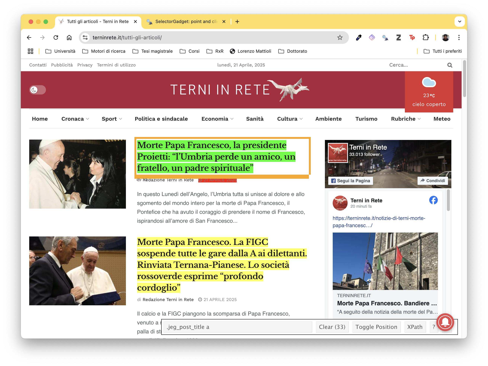

links <- paste0('https://terninrete.it/tutti-gli-articoli/page/', c(1:2984), '/')Scraping online press articles in R
Tutorials
Natural language processing
Web scraping
When I had to choose the topic and methods for my Master’s thesis, I decided it would be a great idea to use it as an excuse to start experimenting with natural language processing. Focusing on the Umbria region, where I grew up, I decided to embark on the completely new task of scraping and analysing local press articles and YouTube videos using the tools of computational social science. This is the first of a series of blog posts on the process of doing just that in R, from a beginner’s perspective.
In this article, we will be using the local newspaper Terninrete as an example. You can find the entire corpus I built with these methods on this website (under the name UmbriaPress), and the complete code for all the scrapers through the </> Code button at the top of this page.
Parsing or scraping?
We refer to web parsing when we extract organised and formatted data, translating it into a format that we (and our machine) understand. In the context of textual analysis, this generally consists of downloading and reading xml files. What we’re going to focus on here is web scraping, which consists of directly attacking a website’s html and turning it into a viable format for data analysis.
The packages you’ll need for his project are: rvest, future, tidyverse, progressr, furrr.
Important
I will not discuss the ethics of web scraping in this article. If you are just starting out, I really recommend this short article on the topic for some quick and easy tips on how to be an ethical scraper and site owner.
What I assume you already know
You’ll need to already be well versed in R to understand the content of this blog post. If you’re not familiar with R programming, I really recommend the R for Data Science manual. If you want some more step-by-step instructions on how to go about computational social science stuff, I found Felix Lennert’s tutorials very helpful.
Workflow
We can break the process of scraping a website into a few simple steps:
Identifying the information we want to extract from a target website
Find a way to isolate the information in the website’s source code
Write a script which stores it in a cozy, spreadsheet-like format
Optimise it to reduce runtimes
The next few paragraphs will explain how to do all that in R, using the packages rvest and future.
Identifying the target information
Unsurprisingly, the first thing one should do is to simply look at the webpage we’re going to scrape and decide what data we’re interested in scraping from it. In this example, Terninrete’s posts page currently looks like this:
Now, we’re interested in a specific set of variables for each article, which we’ll need to target in the website’s source code: the title, the text, and the date of each one. To do that, we’ll actually need to teach our scraper to open each individual article page and scrape additional information (the actual text of each article) from there.
Isolating information in the website’s source code
The best way to isolate parts of a web page is finding the html nodes connected to that specific title or link, as in css classes and the specific html tags containing them. The easiest way I found to do that is using the Chrome extension selectorgadget, which does exactly that with a very easy visual interface. In our case, we’ll first isolate the titles in the posts page to extract a list of URLs to each article. Doing that in Chrome looks something like this:
We can then simply copy-paste the snippet in the bottom panel to retrieve exclusively the data we need.
Actual scraping
In this example, I actually built two scrapers to be used one after the other. One to retrieve the links to each article, the other to retrieve all article data (what we’re actually interested in). We’ll go though the first one step by step, since it is slightly easier to understand, but the workflow is exactly the same.
Define the URLs
First thing to do is define a vector of links to be scraped. In this specific case, the linksvector is simply a link of each one of the 2984 pages of articles posted by Terninrete:
Retrieve data
This passage is at the core of the scraping process. Given an URL, we use rvest::read_html to load a page HTML, then we define a variable containing the information we need (in this case all the articles’ urls) and we use the functions rvest::html_elements and rvest::html_attr to tell R where to find the information. In this case, we copy-paste the node we found with selectorgadget as a string inside html_elements, and then tell rvest to scrape the links at that location by targeting the appropriate html attribute (href).
html <- read_html(link) # load page HTML
url <- html |>
html_elements('.jeg_post_title a') |> # scrape article URLs
html_attr('href')Automating the process
Nobody has time to run the scraper manually 2984 times, so we have a few options to automate the process. The easiest and most basic one is a for loop. we simply iterate the retrieval process for every item in our links vector:
Terninrete <- tibble( # setup tibble
url = character()
)
for (i in 1:NROW(links)) {
print(paste('scraping article number', i, 'of', NROW(article_urls)))
html <- read_html(links[i]) # load page HTML
url <- html |>
html_elements('.jeg_post_title a') |> # scrape article URLs
html_attr('href')
n_row <- tibble(
url = url
)
Terninrete <- n_row |>
bind_rows(Terninrete) # append to original df
}Another option is defining a scraping function and then mapping it to the same vector, taking advantage of purr::map(). This is, in my opinion, a much better option: it lets us take care of errors when they arise, and potentially optimise the process to reduce runtimes, sparing us a lot of headaches and execution halts.
Defining a scraping function
It is always a good idea to wrap one’s functions inside a tryCatch() command, to instruct R on what to do when the function fails. In this case, we tell it to return a tibble row with the URLs if the function works properly, and a NA_character_ if an error arises.
url_scrape <- function(link) {
tryCatch({
html <- read_html(link) # Load page HTML
url <- html |>
html_elements('.jeg_post_title a') |> # scrape article URLs
html_attr('href')
return(tibble(url = url))
}, error = function(e) {
return(tibble(url = NA_character_, errore = as.character(e)))
})
}Mapping it to an URL vector
The scraper is basically done, we can then easily map it to the links vector:
article_links <- map(links, url_scrape(link))Using parallel sessions to reduce runtimes
When working with long lists of URLs, a simple loop or a simple function mapping script might take hours or even days to complete. A good option to reduce runtimes is configuring parallel sessions running the same function. The future environment offers a perfectly streamlined interface to do so. The example below also implements the package progressr to set up a progress bar, very useful in keeping track of the process.
The first step is to configure parallel sessions with future::plan(). This function can set up multi-core or multi-session runs of a function. In this case, we configure a six-session run for the function that we defined above.
plan(multisession, workers = 6)We then set up prgressr by initialising the progress bar and nest our url_scrape() function inside a dummy function which also increments the progress bar. To map our new function to the links vector, we use the futureverse version of purrr, furrr. The new command we’ll use is furrr::future_map().
with_progress({
p <- progressor(steps = length(links)) # initialise prog bar
# Parallel scraping
article_links <- future_map(links, function(link) {
p() # Progress bar increment
url_scrape(link)
})
})The final step is as easy as cleaning up the results. Being a tidyverse fan, I did so with the following pipeline:
article_links <- bind_rows(article_links) |>
unique() |>
filter(is.na(errore)) |>
select(url)
article_links <- article_links$url |>
as.character()In this specific example, all that was left to do was repeat the same steps on the new list of links to each article, and wait for the computer to compile a handy tibble with all the information we need.
Code
## define scraping function ----
art_scrape <- function(link) {
tryCatch({
html <- read_html(link)
title <- html |>
html_elements('.jeg_post_subtitle , .entry-header .jeg_post_title') |>
html_text() |>
paste(collapse = '. ')
date <- html |>
html_element('.meta_left .jeg_meta_date a') |>
html_text() |>
str_extract('\\d{2}\\s[A-Za-z]+\\s\\d{4}')
text <- html |>
html_elements('.content-inner p') |>
html_text() |>
paste(collapse = ' ')
return(tibble(title = title,
date = date,
text = text))
}, error = function(e) {
return(tibble(title = NA,
date = NA,
text = NA,
errore = as.character(e)))
})
}
# configure future for parallel run
plan(multisession, workers = 8)
art_links <- article_links
## progressr config, call function ----
with_progress({
p <- progressor(steps = length(art_links)) # Inizializza la barra di progresso
# Parallel scraping
article_data <- future_map(art_links, function(link) { # Usa future_map qui
p() # Progress bar increment
art_scrape(link)
})
})
# convert results in tibble, parse dates
## set language to italian
Sys.setlocale(locale="it_IT.UTF-8")
TRinrete <- tibble(title = character(),
date = Date(),
text = character(),
errore = character())
TRinrete_ <- bind_rows(article_data) |>
mutate(date = date |> as_date(format = "%d %B %Y")) |>
filter(is.na(errore)) |>
bind_rows(TRinrete) |>
unique()
TRinrete <- TRinrete_ |> rbind(TRinrete)What’s in it for us?
After all this hard work, what we’re left with is a machine-readable, easy-to-navigate tibble of free data to do some exciting analysis on. Once again, the data I scraped is readily available on this website under the name UmbriaPress, and the source codes (which very much reflect my learning curve) can be found through the </> Code button at the top of this page.